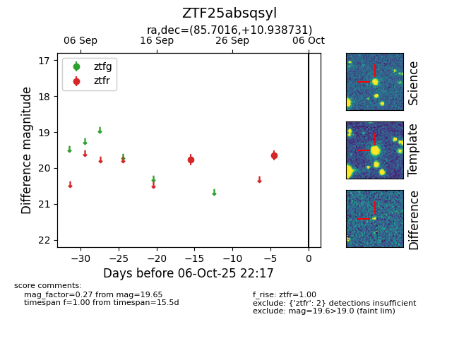

FINK: ZTF25absqsyl
Lasair: ZTF25absqsyl
ALeRCE: ZTF25absqsyl
ZTF25absqsyl (ztf,fink)
equatorial (ra, dec) = (85.7016,+10.93873)
galactic (l, b) = (195.1455,-9.86077)

last ztfr=19.65
2 ztfr detections